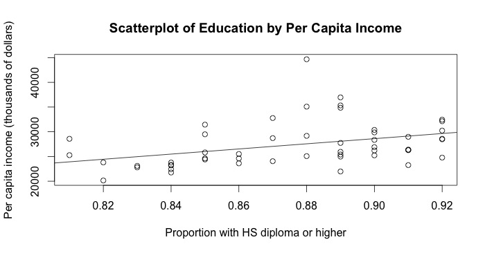

06 — Correlation
Displaying Relationships
Scatterplots
Scatterplots with Categorical Variables
Correlation
Measuring Linear Association
Correlation Matrices (Multiple Correlation)
Partial Correlations
Sensitivity to the Data Distribution
Some Considerations: Causality and Linearity
Case Study: National Education Trends
First let's go ahead and download our data from GitHub:
# This will let us download the file from a remote URL
download.file("https://raw.githubusercontent.com/faulconbridge/appliedStats/gh-pages/part1/data/ch06CaseStudy.csv","census.csv","wget",extra="--no-check-certificate")
# And now we will read the data into R and store it
# in a data frame called 'data'
data <- read.csv("census.csv",header=TRUE,sep=",")
Now, we have two columns that we're interested in: highSchoolorHigher and perCapitaIncome. We would like to see if there is a relation between a state's per capita income and the proportion of its residents to have completed high school or higher. So let's start by constructing a scatterplot of the two variables:
# Notice, when we reference a column we use the syntax
# dataset$column. The first half tells R which data set
# we are referencing, the dollar sign indicates that we
# want to reference a specific column, and everything
# after that is the column name itself.
plot(data$HighSchoolOrHigher,data$perCapitaIncome,
xlab="Proportion with HS diploma or higher",
ylab="Per capita income (dollars)",
main="Scatterplot of Education by Per Capita Income")
# We can also plot a line of best fit:
fit <- lm(data$perCapitaIncome~data$HighSchoolOrHigher)
abline(fit)

As we can see, there appears to be a positive linear relationship between per capita income and the proportion of a state's residents having a high school diploma or higher. Our next step is then to quantify the strength of this relationship. To do this, we will perform a bivariate correlation
# The syntax for a correlation test in R is easy:
# it is cor.test(var1, var2) where var1 and var2
# are the two variables that you're interested in.
cor.test(data$perCapitaIncome,data$HighSchoolOrHigher)
Pearson's product-moment correlation
data: data$perCapitaIncome and data$HighSchoolOrHigher
t = 2.7752, df = 49, p-value = 0.007788
alternative hypothesis: true correlation is not equal to 0
95 percent confidence interval:
0.1034750 0.5847427
sample estimates:
cor
0.3685491
As we can see, there are several noteworthy items presented in this table. Firstly, we have a t-statistic of 2.78. This is above the 1.96 threshold that we set, indicating that our correlation is probably going to be significant. From there, we can look at our p-value (0.008) and see that it is below the 0.05 threshold, indicating that we do indeed have a significant correlation.
If it weren't obvious from the scatterplot above, this is a positive correlation with a Pearson's r=0.37, meaning that there exists a fair positive relationship between our two variables. I.e., when one is larger, the other will also tend to be larger.